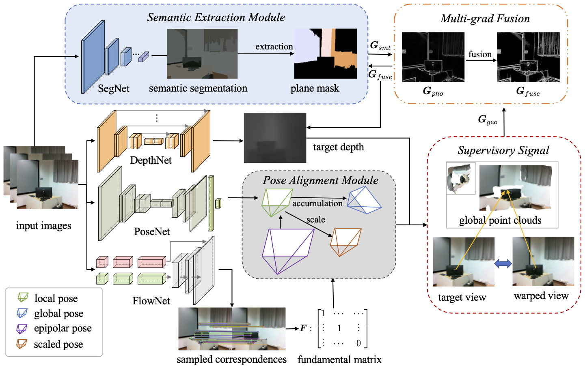
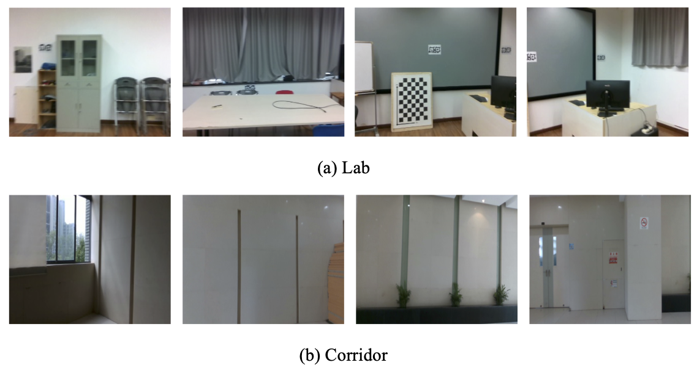

|
Online Indoor Visual Odometry with Semantic Assistance under Implicit Epipolar Constraints Yang Chen1, Lin Zhang1, Shengjie Zhao1, and Yicong Zhou2 1School of Software Engineering, Tongji University, Shanghai, China 2Department of Computer and Information Science, University of Macau, China |
Introduction
This is the website for our paper "Online Indoor Visual Odometry with Semantic Assistance under Implicit Epipolar Constraints ". 
Our Collected Dataset
To better confirm the benefit of our SEOVO in textureless environments, we collected two video sequences using the Realsense d453i camera in our lab and a closed corridor next to it respectively which contain large areas of texturelss regions. The data can be downloaded here. The "laboratory" and the "corridor" sequences in it include both RGB images and corresponding depth maps. Also, the camera intrinsics are provided. The original resolutions of all collected images are 640 × 480, which are resized to 320 × 256 during online training. Typical image samples contained in this dataset are shown below.

Source Codes
Note: all these codes related to SEOVO are implemented by Pytorch and we run them on Nvidia GeForce RTX 3070.
Experimental Results
The following tables quantitatively give the performance of SEOVO and typical competitors on the public 7-scenes dataset and the ScanNet in depth (Table II and Table III) and pose estimation (Table VI and Table VII), respectively. Our SEOVO outperforms other competitors in nearly all scenes, demonstrating its effectiveness owing to the introduction of the geometric constraint and the semantic prior.
The depth maps estimated by SEOVO and other counterparts are given below. It can be seen that our depth maps have sharper edges with high accuracy thanks to the "multi-grad" map.
The reconstruction results show our advantages in maintaining the global consistency of maps, producing high-quality 3D models which have satisfactory geometric structures and are consistent with perception.
Demo Videos
The following are the demo video demonstrating the pipeline and the performance of our SEOVO in pose and depth estimation for indoor reconstruction.
Last update: Apr. 13, 2024